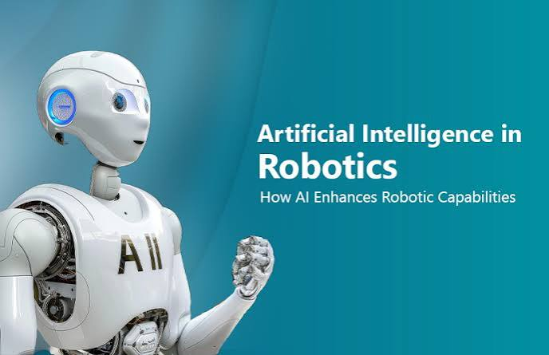

How AI Helps Robots

Robotics is a field of computer science and engineering that focuses on designing machines that can sense, move, and interact with the physical world. Artificial Intelligence helps robots make better decisions by using data from sensors, cameras, and software.
AI powered robots can recognize objects, follow paths, avoid obstacles, and complete repeated tasks. This makes robotics useful in factories, hospitals, warehouses, transportation, and exploration.
Example of AI in Robotics
- Manufacturing: Robots can help assemble products and inspect items for defects.
- Healthcare: Robots can assist with surgery, delivery, and patient support.
- Space Exploration: Robotic systems can collect data in places that are dangerous for humans.
- Warehouses: Robots can move products, scan items, and support shipping systems.
Sources
NASA: RoboticsBuilt In: Robotics